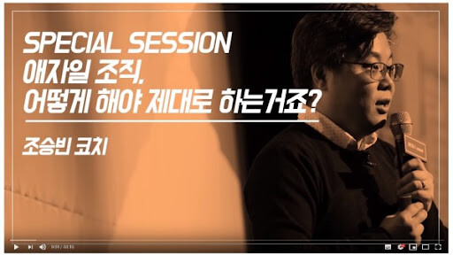
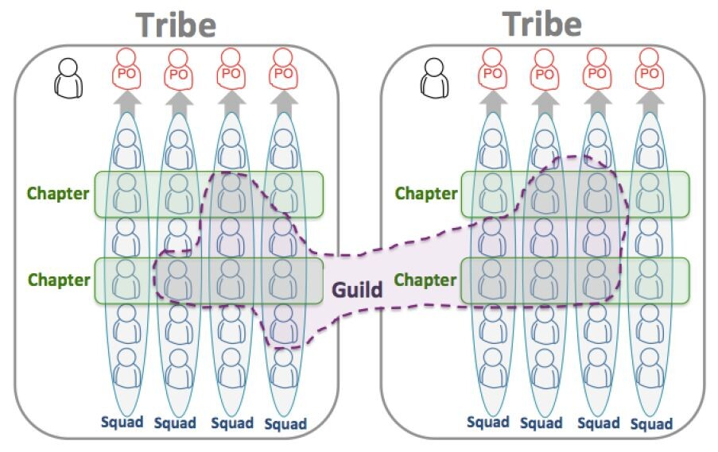
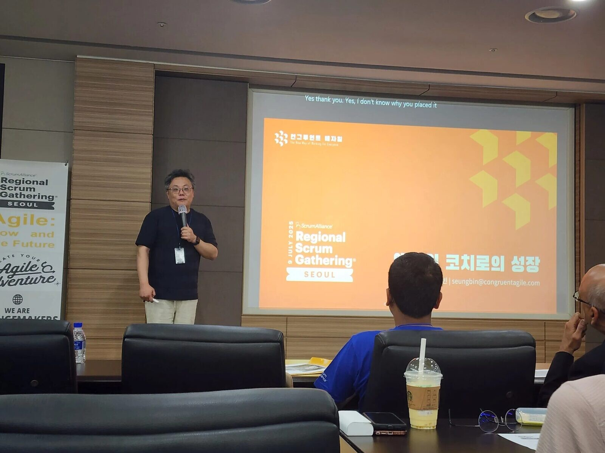

조승빈 대표는 '애자일'이라는 개념에 관해 양가적인 생각을 가지고 있다. 한편으로는 많은 조직이 잘 적용해야 할 방법론이지만, 한국에서는 너무 개념이 오염되어 이상하게 쓰이고 있기 때문이다. 조직을 가리지 않고 다양한 기업을 코칭한 그로부터, 진짜 '애자일'과 '스쿼드'가 어떤 것인지 들어보았다.
애자일에 관한 오해: 필요에 따라 사람을 유연하게 배치하는 게 아니다
사람들이 애자일에 관해 가지고 있는 가장 흔한 인식은 '유연한 조직'이에요. 그리고 유연하다는 의미를 이렇게 받아들여요. 'A팀은 일이 많지 않고, B팀은 야근으로 죽어가. 그러니 A팀에서 몇 명 뽑아서 B팀에 넣자.' 그런데 이건 진짜 애자일이 지향하는 방향과 완전 반대편이에요.
진짜 애자일 조직의 유연함은 '방법을 팀이 스스로 알아내서 가는 것'이에요. 상황 변화가 발생할 때, PPT로 보고서를 작성해서 윗선에 허락받을 필요가 없어요. 정보가 있는 곳에서 의사결정을 하는 게 제일 빠르니까요.
팀이 스스로 움직이기 때문에 유연하다고 하는 거예요. 이게 유연함의 정체입니다. 상부에서 누군가가 임의로 결정하는 건 유연한 게 아니에요. 의사결정의 위치가 현장에 있는 게 유연한 거예요. 진짜 애자일에서는 위에서는 의도만 명확하게 던지고, 방법은 팀이 알아내요.

이 얘기를 가장 빠르게 알아듣는 분들이 누구인지 아세요? 군 장교들이에요. 대한민국 장교들한테 애자일 얘기를 할 때 "임무형 지휘 체계를 회사에 만드는 거다"라고 하면 다 알아들어요.
지휘관들이 의도만 명확하게 전달하고, 방법은 팀이 알아서 하는 것. 군대에서는 이게 기본이거든요. 전쟁터에서 위에다 일일이 컨펌 받을 수 없잖아요. 그러니까 사령관이 의도만 전달하고, 일선 부대가 알아서 방법을 찾는 게 임무형 지휘 체계예요. 이게 애자일이에요.
스쿼드에 관한 오해: 프로젝트 단위로 꾸렸다가 해체하는 TF가 아니다
또 한 가지 오해가 깊은 단어가 '스쿼드'예요. 한국에서는 보통 "스쿼드 만들었어"라고 하면, 같은 프로젝트 하는 사람들을 모아서 1년짜리 프로젝트 끝나면 흩어지는 TF로 받아들이세요.
TF는 보통 경험 있는 사람들을 긁어모아요. 마케팅 잘하는 사람, 개발 잘하는 사람, 디자인 잘하는 사람… 전문가 팀이죠. 객관적으로 보면 강해 보여요. 근데 이 팀은 응집력도 소속감도 없어요. TF 끝나고 1년 후에 흩어질 사람들이 모인 거니까요.

반면 스포티파이의 스쿼드는 여러 팀에서 모인 임시 TF가 아니에요. 그 자체로 몇 년이 갑니다. 마케팅팀, 영업팀, 개발팀에서 차출된 사람이 잠깐 모여서 일하고 끝이 아니라, 그 사람들이 섞인 채로 팀이 그대로 가는 거예요.
이번에도 군대를 예로 들어 볼게요. 특공대가 조직되면 소총수, 위생병, 통신병, 이렇게 다 다른 특기를 가진 사람들이 한 팀에 묶여 있잖아요? 그 팀 그대로 계속해서 미션이 주어집니다. 이번 작전에는 산악 침투, 다음 작전에는 해상 침투. 미션은 바뀌어도 특공대 멤버는 그대로예요.
스포티파이의 스쿼드가 그거예요. 미션은 바뀌지만 팀은 그대로 갑니다. 설령 전문성이 부족하더라도 수년간 손발을 맞춰 온 팀에 업무를 주는 거예요. 응집력이 있고 소속감이 있어요. 신뢰도 있고요. 이게 애자일과 이어지죠. '너희가 직접 방법을 찾아봐' 하는 거예요.
사실 응집력 좋은 팀에게 일을 맡기는 게 더 효율적일 수 있어요. 하지만 한국의 대기업은 "그 팀은 전문성이 부족해" 하면서 안 맡기죠. 그리고 일 끝나면 또 다른 TF 만들고… 그런 식으로는 영원히 응집력 있는 팀이 만들어지지 않아요. 이게 한국 조직 문화의 큰 문제예요.
조직 운영에 정답은 없다, 다만 리더의 신념에 맞는 구조라야 한다
그런데 여기서 진짜 중요한 얘기를 해야 해요. 저는 애자일이나 스쿼드가 정답이라고 이야기하는 게 아닙니다.
결국 조직이란, 경영자의 인간관, 조직관, 업무관이 담기는 곳이에요. 경영자가 '사람은 시키지 않으면 제대로 안 한다'고 믿으면, 본인이 명령하고 보고받는 구조를 만들어야 해요. 반대로 경영자가 '사람은 의도만 잘 전달하면 알아서 한다'고 믿으면, 본인이 의도 던지고 위임하는 구조를 만들면 됩니다.
그러니까 '애자일을 도입할까 말까'가 중요한 게 아니에요. '내가 사람을 어떻게 믿고 있는가'가 먼저예요. 본인이 뭘 믿는지를 먼저 정리하셔야 합니다. 결국 조직은 경영자의 신념대로 굴러가요. 그 신념에 맞는 시스템을 찾고 만드는 게 경영자가 할 일입니다.

그래서 어떤 리더가 좋은 리더인지에 대한 정해진 답은 없어요. 자신이 가진 신념에 맞는 조직을 꾸려나가는 게 중요하니까요. 다만 오랜 경험을 통해 한 가지는 깨달은 게 있어요. "내가 잘 몰라"라고 얘기하시는 리더들은 거의 100% 좋은 리더들이에요.
왜냐면 자기가 다 안다고 생각하는 리더는 듣지를 않아요. 직원이 뭔가 얘기하면 "아니야, 그건 이래야 돼" 하고 끊죠. 그러면 직원들은 점점 더 말을 안 하고, 회사 내의 정보가 위로 안 올라가게 됩니다. 결국 리더 혼자 답을 내고, 그 답이 틀려요. 본인이 모르는 영역에서 결정하니까요.